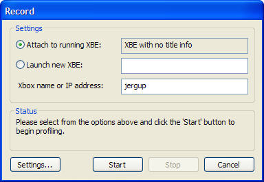

CPX Record Dialog Box
This dialog box is used to record a new profiling session.

Users can choose between profiling an XBE that is already running or launching a new XBE and profiling that one.
Profiling a Running XBE
To profile an XBE that is already running, take the following steps.
- Click Settings to make sure that the settings such as the path to the debug symbols are set correctly.
- Select the Attach to running XBE option.
- Make sure that name or IP address of the target Xbox is set correctly.
- Click Start to start the profiling session.
- Click Stop to stop the profiling session.
Launching a new XBE and Profiling
To start profiling an XBE that is not yet running, take the following steps.
- Click Settings to make sure that the settings such as the path to the debug symbols are set correctly.
- Select the Launch a new XBE option and specify the full path to the XBE on the E drive of the Xbox. For example, the path might be "e:\samples\dolphinclassic\dolphinclassic.xbe".
- Make sure that name or IP address of the target Xbox is set correctly.
- Click Start to start the profiling session.
- Click Stop to stop the profiling session.